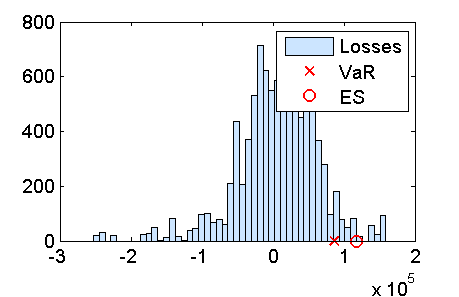

Contents
function demo_historicalSimulationVaR
demo_historicalSimulationVaR: Historical simulation for VaR
Load the data
S = load('closingPrices_IBM_GOOG_SI_2007_07_01_2013_06_30.txt');
Select data in the recent past
N = 500;
S_IBM = S(end-N:end,1);
S0_IBM = S_IBM(end);
S_GOOG = S(end-N:end,2);
S0_GOOG = S_GOOG(end);
Compute the historical returns for the specified time horizon (DeltaT)
horizon = 5;
indices = N+1:-1:horizon+1;
indices = indices(end:-1:1);
N = length(indices);
r_IBM = log(S_IBM(indices)./S_IBM(indices-horizon));
r_GOOG = log(S_GOOG(indices)./S_GOOG(indices-horizon));
Portfolio composition
c_IBM_asset = 500;
c_GOOG_asset = 200;
c_IBM_call = 5000;
c_GOOG_asianCallAM = 2000;
Portfolio value at t0
Value of the European call option on IBM
r = 0.01;
T = 1;
K = 180;
nDaysInYear = 252;
sigma_IBM = 0.16;
payoff_call = @(ST)(max(ST-K,0));
price_IBM_call = priceEuropeanOption(S0_IBM,r,T,sigma_IBM,payoff_call);
Value of an Asian call option on the arithmetic mean of Google
N_AM = 6;
T = 0.5;
M_AM = 1e3;
K = 880;
sigma_GOOG = sqrt(nDaysInYear/horizon)*std(r_GOOG);
[price_GOOG_asianCallAM,stdev_MC] = ...
priceAsianArithmeticMeanCallMC_controlVariate(S0_GOOG,K,r,T,sigma_GOOG,M_AM,N_AM)
price_GOOG_asianCallAM =
43.2304
stdev_MC =
0.0510
Value of the portfolio
P0 = c_IBM_asset*S0_IBM + ...
c_IBM_call*price_IBM_call + ...
c_GOOG_asset*S0_GOOG + ...
c_GOOG_asianCallAM*price_GOOG_asianCallAM;
w_IBM_asset = c_IBM_asset*S0_IBM/P0
w_IBM_call = c_IBM_call*price_IBM_call/P0
w_GOOG_asset = c_GOOG_asset*S0_GOOG/P0
w_GOOG_asianCallAM = c_GOOG_asianCallAM*price_GOOG_asianCallAM/P0
w_IBM_asset =
0.2101
w_IBM_call =
0.2125
w_GOOG_asset =
0.3872
w_GOOG_asianCallAM =
0.1901
Historical (bootstrap) simulation
M = 1e4;
Simulate the prices of the underlying at t0 + DeltaT
bootstrapIndices = ceil(rand(M,1)*N);
simulated_r_IBM = r_IBM(bootstrapIndices);
simulated_ST_IBM = S0_IBM*exp(simulated_r_IBM);
simulated_r_GOOG = r_GOOG(bootstrapIndices);
simulated_ST_GOOG = S0_GOOG*exp(simulated_r_GOOG);
Compute the prices of the derivatives at t0 + DeltaT
simulated_price_IBM_call = zeros(M,1);
simulated_price_GOOG_asianCallAM = zeros(M,1);
for m = 1:M
IBM: Call option
simulated_price_IBM_call(m) = ...
priceEuropeanOption(simulated_ST_IBM(m),r,T,sigma_IBM,payoff_call);
GOOG: Call on the arithmetic mean
simulated_price_GOOG_asianCallAM(m) =...
priceAsianArithmeticMeanCallMC_controlVariate(simulated_ST_GOOG(m),...
K,r,T,sigma_GOOG,M_AM,N_AM);
end
Simulated portfolio value at t0 + DeltaT
simulated_PT = c_IBM_asset*simulated_ST_IBM + ...
c_IBM_call*simulated_price_IBM_call + ...
c_GOOG_asset*simulated_ST_GOOG + ...
c_GOOG_asianCallAM*simulated_price_GOOG_asianCallAM;
Simulated losses
simulated_Loss = -(simulated_PT-P0);
Risk measures
p = 0.95;
VaR = quantile(simulated_Loss,p)
indexTail = simulated_Loss > VaR;
ES = mean(simulated_Loss(indexTail))
VaR =
8.6106e+04
ES =
1.1763e+05
Risk measures as a percentage of the current portfolio value
100*VaR/P0
100*ES/P0
ans =
18.9357
ans =
25.8690
Plot the results
figure(1);
nBins = 50;
hist(simulated_Loss,nBins);
hold on;
plot(VaR,0,'rx');
plot(ES,0,'ro');
hold off;
legend('Losses','VaR','ES');
